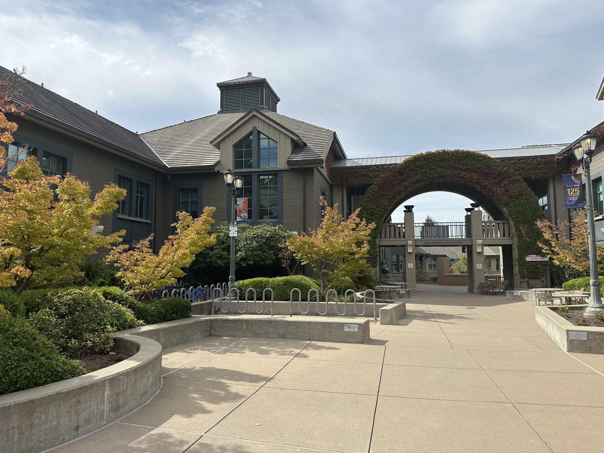
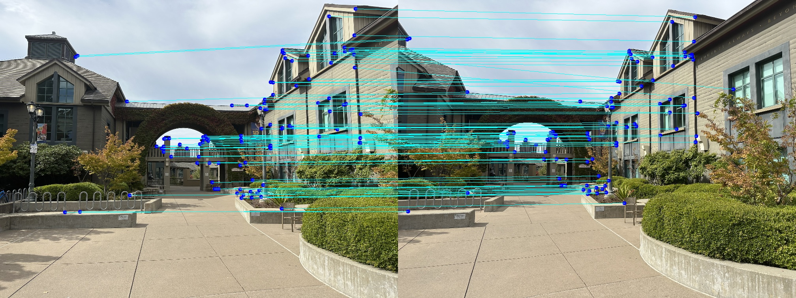
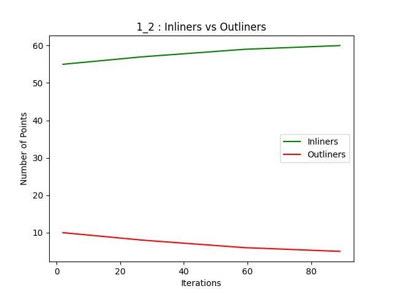

Experiment: IMAGE WARPING and MOSAICING (part2)
Name: Yuanteng Chen
ID: 3039725444
1.Experiment Report
1.1 Show original images we want to do MOSAICING
1
2

3
4
5
1.2 Harris Interest Point Detector (Section 2)

4
2.3 Adaptive Non-Maximal Suppression (Section 3):
Set ANMS = 750, robust = 0.9.
the following five tables show the process of
corner point compression applied to five original images:
Using Adaptive Non-Maximal Suppression,
the selected coords in 5 images are shown:

2
2.4 Feature Descriptor extraction (Section 4)
For each selected corner point, we take a 40x40 region
centered around it. We then sample every fifth pixel in the region
to achieve a final patch size of 8x8.
The resulting 8x8 patch is flattened and normalized to serve as the descriptor for that corner point.
Here I show two 8x8 descriptors as example:
2.5 Feature Matching (Section 5)
Set threshold of (best_match_distance / suboptimal_match_distance) = 0.75,
We got matched points pair between image 1 and 2, 2 and 3, 3 and 4 , 4 and 5.
I connect matched points pairs between two images using blue line:
image1 and image2:
image2 and image3:
image3 and image4:
image4 and image5:

2.6 RANSAC
Hyperparameters of RANSAC:
num_pts_per_sample = 4,
percentage_of_outliers = 0.6,
threshold = 3.
Here, I will use a chart to illustrate the process of applying the RANSAC algorithm,
where the number of inliers is the sum of the sample size and the number of inliers.
RANSAC between image1 and image2:
RANSAC between image2 and image3:

RANSAC between image3 and image4:
RANSAC between image4 and image5:
2.7 MOSAICING result
2.7.1 results of the images processed above.
The other parts related to mosaicing have been introduces in part 1,
so they will not be repeated here. Let's directly display the final result:
Here I also display the result of using high API cv2.xfeatures2d.SIFT_create:
Compare my result with Opencv's result:
the differences can be seen within an acceptable range.
2.7.2 other results of mosaic I want to show
(1): view from foothill:
Raw images:
1
2
3
4
5
mosaic result:
Compare my result with Opencv's result:
(2): Long business library (where I finished the report):
Raw images:
1
2
3
mosaic result:
Compare my result with Opencv's result:
2.8 Coolest thing you have learned
The coolest thing I learned from this project is the step-by-step replication of algorithms from research papers and achieving results that are quite close.
In this part 2, we reproduced most of the steps from the paper 'Multi-Image Matching using Multi-Scale Oriented Patches'
— including the Harris Interest Point Detector, Adaptive Non-Maximal Suppression, Feature Descriptor extraction,
Feature Matching, and even the subsequent implementation of the RANSAC algorithm.
I believe this significantly boosted my confidence for future learning endeavors!